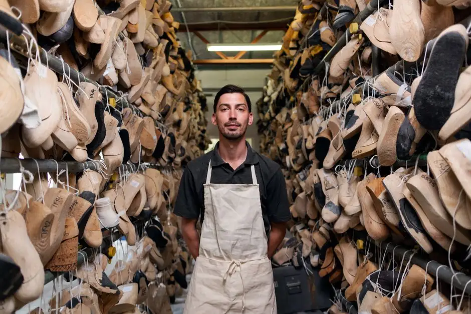

Rapid 24-48 hour microbial prevention & eradication
Mold After Water Damage Spokane WA
Water intrusion leads to active mold colonies within 24 to 48 hours. Spokane Mold Experts halts fungal colonization after frozen pipe bursts, roof leaks, and basement flooding with rapid structural extraction, antimicrobial treatment, and insurance documentation.
24/7 rapid dispatchDirect insurance billingThermal moisture mapping
Critical response protocol
What Post-Water Damage Mold Remediation Includes
We combine high-volume water extraction with aggressive microbiological defense to stop mold from spreading throughout your property.
Rapid Water Extraction
We remove standing water immediately using weighted subfloor extractors and truck-mounted vacuum units to eliminate the mold's moisture supply.
Thermal Moisture Mapping
Infrared cameras identify water tracked behind wall cavities, under laminate flooring, and inside ceiling insulation that would otherwise grow mold.
Controlled Flood Cutting
Saturated drywall and insulation harboring early mold colonies are cleanly cut 12-24 inches above waterlines and bagged in heavy poly under containment.
Industrial Dehumidification
Commercial LGR dehumidifiers and high-velocity air movers draw moisture out of structural studs until wood reaches safe equilibrium below 15%.
The 24-48 hour rule
Why Water Damage Turns into Dangerous Mold
Every home contains dormant mold spores. When flooded with clean, grey, or black water, these microscopic organisms absorb moisture and germinate within 24 to 48 hours, feeding on drywall paper, carpet padding, and wood framing.
In Spokane, sudden winter deep-freezes burst copper pipes in exterior walls, while spring snowpack runoff overpowers basement foundations. Simply drying a carpet surface with household fans leaves moisture trapped behind walls—creating dark, humid chambers where Chaetomium, Aspergillus, and Stachybotrys multiply unchecked. Our IICRC-certified remediation ensures structural drying and microbiological eradication happen simultaneously.

Act within 24 hoursFast drying prevents mold spores from colonizing wet drywall and structural timber.
Emergency protocol
Our Post-Water Damage Remediation Process
A proven 5-step methodology aligned with IICRC S500 and S520 industry standards.
Immediate Triage & Moisture Mapping
We arrive on-site, shut off water sources if needed, and map exact moisture perimeters using thermal imaging cameras.
Physical Water & Material Removal
Extract standing water, remove unsalvageable saturated carpet padding, and execute clean flood cuts on wet drywall.
Antimicrobial Sanitization Wash
Apply EPA-registered broad-spectrum fungicidal wash to exposed studs, subflooring, and concrete to halt mold spore germination.
High-Capacity Industrial Drying
Deploy commercial LGR dehumidifiers and axial air movers with HEPA scrubbers, monitoring moisture levels daily with pin meters.
Post-Drying Inspection & Clearance
Verify all structural framing has reached dry standard (<15% WME) with zero microbial odor or residual spores before reconstruction.
High-tech restoration
Industrial Water & Mold Drying Technology
State-of-the-art drying and sanitizing machinery deployed on every emergency call.
FLIR Infrared Cameras
Instantly visualize temperature drops where moisture hides behind ceilings, tiled surrounds, and baseboards.
LGR Dehumidifiers
Commercial Low-Grain Refrigerant units that lower vapor pressure to extract moisture trapped deep inside wood framing.
Axial Air Movers
Direct high-velocity airflow across wet structural surfaces, speeding evaporation before mold spores can establish colonies.
HEPA Air Scrubbers
Continuous air filtration removing airborne mold particulates, dust, and microbial VOCs from the drying environment.
Local case studies
Spokane Post-Flood Remediation Stories
Real water damage recoveries across Spokane neighborhoods.

North Spokane Washing Machine Overflow
Hot water saturated laminate flooring and baseboards, going unnoticed for 36 hours until mold appeared. → Removed saturated subflooring, sanitized concrete slab, and eliminated all mold odors.
Downtown Spokane Commercial Suite
A water heater rupture flooded three executive offices. → Deployed negative pressure containment, performed 2-foot drywall flood cuts, and completed drying in 3 days with full insurance reimbursement.
Urgent signs
Common Problems Solved by Post-Water Mold Remediation
Immediate action prevents secondary microbial damage:
Water soaked into drywall & subfloors
Trapped moisture provides the exact food source and relative humidity required for explosive fungal growth.
Musty odor emerging 48 hours after a leak
A distinct damp, sour smell indicates active microbial metabolism and spore release inside damp wall cavities.
Discolored baseboards & bubbling wall paint
Paint blistering, peeling wallpaper, or dark spotting appearing along wall perimeters following a water event.
Cost & insurance
Spokane Post-Water Mold Remediation Pricing
$1,100 - $3,500 typical residential project
Early Prevention Triage ($1,100 - $1,800)
Rapid water extraction, moisture mapping, antimicrobial wash, and 48-hour commercial dehumidifier deployment.
Remediation + Flood Cuts ($1,800 - $3,500)
Drywall flood cuts, carpet pad removal, containment, HEPA air scrubbing, and structural stud sanitization.
Multi-Room Complex Water & Mold ($3,500 - $6,500+)
Extensive multi-level flooding, ceiling tear-outs, subfloor replacement, and full insurance adjuster documentation.
Client testimonials
What Spokane Customers Say About Our Water Response
★★★★★
“A supply line to our upstairs bathroom burst while we were out of town in January. Water poured into the kitchen ceiling. Spokane Mold Experts was at our door in 45 minutes, set up dehumidifiers, contained the damp drywall, and treated all joists before mold could spread. They saved our kitchen!”
★★★★★
“Three days after a basement water heater failure, fuzzy black spots appeared behind our baseboards. They handled the mold remediation quickly and provided all documentation our insurance company needed.”
★★★★★
“Professional, punctual, and equipped with serious industrial gear. They monitored drying daily with thermal cameras until everything was bone dry.”

How quickly does mold grow after water damage in Spokane?
Mold spores begin colonizing wet organic building materials—such as drywall paper, wood framing, subflooring, and carpet padding—within 24 to 48 hours of water intrusion. Immediate structural drying, moisture extraction, and antimicrobial application within the first 24 hours are critical to prevent widespread microbial contamination.
Does homeowners insurance cover mold resulting from water damage?
Most standard homeowners policies in Washington state cover mold remediation if it resulted directly from a sudden and accidental covered water event (such as a burst pipe, water heater tank rupture, or sudden appliance line failure). Policies typically exclude mold caused by chronic neglect or slow, unaddressed leaks. We supply full insurance documentation, moisture logs, and photographic proof to support your claim.
How much does mold remediation after water damage cost in Spokane?
Costs typically range between $1,100 and $3,500 for single-room water incidents with localized microbial growth. Projects involving multiple floors, extensive insulation removal, subfloor restoration, or category 3 water (sewer backups) range from $3,500 to $7,000+.
Can wet drywall be dried out without mold developing?
If clean water (Category 1) is extracted and high-velocity drying with commercial dehumidification is initiated within the first 12-24 hours, drywall can sometimes be saved. However, once mold colonies become visible or if the water has sat for more than 48 hours, drywall gypsum and paper backing are contaminated and must be cut away and discarded under containment.
Related services
Explore Related Services
Water Damage Restoration
Comprehensive water extraction, structural desiccant drying, and complete property restoration.
Basement Mold Removal
Subterranean moisture control and concrete foundation sanitization following basement floods.
Black Mold Removal
Hazardous negative pressure containment if water damage has bred toxic Stachybotrys chartarum colonies.24/7 emergency dispatch
Stop Mold Before It Takes Over
Call Spokane Mold Experts immediately after any water intrusion. Our crews route now with industrial drying equipment to protect your home.

Emergency dispatch
Request Immediate Water & Mold Triage
Call our 24/7 hotline or submit the form for priority emergency routing. We work directly with all major insurance carriers.